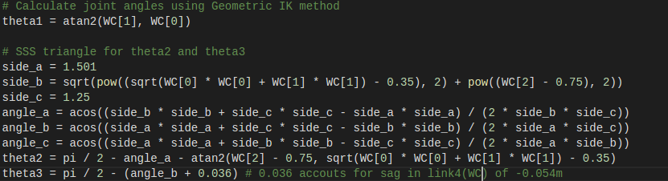

Robotics Nanodegree
P2: Robotic Arm: Pick and Place
Hyungsuk Kang
Introduction
The goal for this project was to create forward / inverse kinematic model for KUKA KR210 robot arm. The model development, debugging, and testing was performed by use of ROS, Gazebo, and Rviz.
Kinematic Analysis
1. DH Parameters
Kinematic model of robot KR210 is presented in the picture above. Following sketch with kr210.urdf.xacro file in the project allowed to define the DH parameters.
|
i |
alpha(i-1) |
a(i-1) |
d(i) |
q(i) |
|
1 |
0 |
0 |
0.75 |
|
|
2 |
-pi/2 |
0.35 |
0 |
q2-pi/2 |
|
3 |
0 |
1.25 |
0 |
|
|
4 |
-pi/2 |
-0.054 |
1.5 |
|
|
5 |
pi/2 |
0 |
0 |
|
|
6 |
-pi/2 |
0 |
0 |
|
|
7 |
0 |
0 |
0.303 |
0 |
2. Transformation Matrices
Homogeneous transform matrix was applied with the skeleton code:
DH parameters are applied as following:
Individual transform matrices about each joint(from joint(i-1) to joint(i)) are created as following:
* End Effector(EE) represents gripper link of the robot.
Generalized homogeneous transform between base_link and gripper_link using only end-effector pose is generated in T0_EE variable.
3. Decoupling Inverse Kinematics
Inverse kinematic for 6 axis robot will be performed by kinematical decoupling, where in order to solve the whole problem can be divided by decoupling the kinematic into two subtasks:
1. Position of inverse kinematic problem
2. Orientation of inverse kinematic problem
1. Position of inverse kinematic problem
Kinematic Analysis shows that:
- Joint 5 intersects axes Z4, Z5, and Z6, and the movement of axis 4,5,6 does not affect on the position of joint5. Therefore, the position of joint 5 can be used for calculating theta 1,2 and 3 without the effect from next joints.
To get wrist center with given end-effector position with the code:
Position and orientation are provided for compensating discrepancy between DH parameters and Gazebo.
To Solve Position for theta1, theta2, theta3:
Angle and side of the triangle which is formed with joints are calculated with cos I, II.
The theta angles are implemented in code:

2. Orientation of inverse kinematic problem
Orientation of wrist center can simply be derived from rotation matrix from the wrist center to end effector.
Project Implementation
The robot showed move with high accuracy of putting can to trash bin in 8/10 times. DH parameters could be adjusted more precisely from the error displayed in IK_debug.py file.